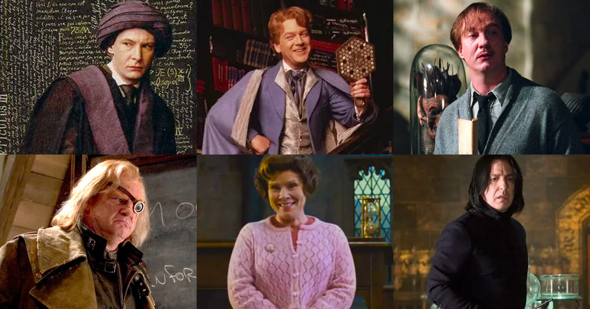

# Accio libraries
library(tidyverse)
library(here)
library(glue)
library(openxlsx)
# Accio data
spells <- read.csv(file = here("materials", "data", "spells.csv"))
characters <- read.csv(file = here("materials", "data", "Characters.csv"))Session 3: Defence Against the Dark Arts
Introduction

Word has gotten out that you are a confident coder now. With that, the data requests made of you have grown more serious, darker. We must prepare ourselves. We must learn Defence Against the Dark Arts - ways to scale up our code so that we can efficiently manage larger or more complicated tasks. In this section we are going to learn these techniques by simulating a deadly magical battle, much like the final battle in the Deathly Hallows. In order to survive we will need to acquaint ourselves with conditional logic, functions, and loops.
If you’ll allow a quick aside from the dark arts metaphor - a positive spin on this next step is that you are in a place where you are getting grander and more exciting ideas about how to approach analysing data and building data products. With a little bit of upfront investment in some new techniques, this process can be fun and the results more reliable, reproducible, and accessible to others, so let’s begin!
Conditional Logic
A compulsory reminder which is relevant now more than ever is to not worry about the commas and squiggly lines, focus instead on the gist - the basic principles of what we are setting out to do and why. If you have these, then you can always seek out one of many available resources online to fill in the gaps if and when needed.
Think of an =IF() or an =IFELSE() in Excel. The basic idea that we carry out an operation based on a condition is one of the most fundamental and powerful principles in programming. In Excel, however, it becomes quite laborious quite quickly to extend the logic within an =IF() statement to accomodate more complicated tasks and the formula quickly becomes unmanageable. This is a lot more manageable in R and after you wrap your head around it you can achieve spectacularly complex feats of data manipulation and transformation.
The following examples relies on data sets - one on Harry Potter characters, and the other one spells. Check them out below:
str(characters)'data.frame': 166 obs. of 9 variables:
$ Character.ID : int 1 2 3 4 5 6 7 8 9 10 ...
$ Character.Name: chr "Harry Potter" "Ron Weasley" "Hermione Granger" "Albus Dumbledore" ...
$ Species : chr "Human" "Human" "Human" "Human" ...
$ Gender : chr "Male" "Male" "Female" "Male" ...
$ House : chr "Gryffindor" "Gryffindor" "Gryffindor" "Gryffindor" ...
$ Patronus : chr "Stag" "Jack Russell Terrier" "Otter" "Phoenix" ...
$ Wand..Wood. : chr "Holly" "" "Vine" "Elder" ...
$ Wand..Core. : chr "Phoenix Feather" "" "Dragon Heartstring" "Thestral Tail Hair" ...
$ student : chr "y" "y" "y" "n" ...str(spells)'data.frame': 61 obs. of 5 variables:
$ Spell.ID : int 1 2 3 4 5 6 7 8 9 10 ...
$ Incantation: chr "Accio" "Aguamenti" "Alarte Ascendare" "Alohomora" ...
$ Spell.Name : chr "Summoning Charm" "Water-Making Spell" "Launch an object up into the air" "Unlocking Charm" ...
$ Effect : chr "Summons an object" "Conjures water" "Rockets target upward" "Unlocks target" ...
$ Light : chr "" "Icy blue" "Red" "Blue" ...These simple dataframes (alongside having seen the films!) are perfect for practicing some conditional logic. Let’s write some code to print out the name and effect of any spell in spells. However, Hermoine is around and if we mispronounce her favourite spell or try and cast a nonsense spell, she’s going to call us out on it. Use the helper code to get the unique values of spells in the spells dataframe and try some different spells!
Spoken translation:
“Let's save the spell we want to apply some conditional logic too in an object called spell_cast. If the spell cast is exactly equal to Wingardium Leviosa, then print out some guidance on how to properly pronounce the spell. Apart from that exception, if the spell exists in the Incantation column of the spells dataframe then print out the spell name and the effect from the Effect column. If anything else is input other than that already accounted for print out that it is not a spell.”
# unique(spells$Incantation)
spell_cast <- "Immobulus" # Change this to test different spells
# Check if the spell is valid
if (spell_cast == "Wingardium Leviosa") {
print("It's leviOsa, not levioSA!")
} else if (spell_cast %in% spells$Incantation) {
spell_info <- spells |> filter(Incantation == spell_cast)
print(glue("Spell: {spell_info$Incantation}, Effect: {spell_info$Effect}"))
} else {
print("Not a spell, try again.")
}Spell: Immobulus, Effect: Stops movement and actions of the targetFunctions
My guess is that you will noticed two things after having tried out a few spells. The first is that achieving a different output by only changing one value feels very powerful. The second is that having to run all that code every time a new spell is cast gets clunky and painful. Imagine you wanted to try out 100 spells in the same script? The code would get out of hand very quickly and the resulting script would be very messy, manual, and repetitive.
That’s why we have functions - we wrap code that we want to run again and again with slightly different inputs into functions. The result of this is that we can stash away the code somewhere safe and out of the way and reap their benefits with very little code, typically just one line. A whole world of possibilities opens up when you start writing functions, the most immediate of which are that your code can be scaled up, shared, and tested much more effectively.
Here is the some code as the example above wrapped in a function called spell_practice. This function takes one argument called spell_cast which allows the user to cast a spell with great ease. We say “wrapped” in a function, because all we did was take our existing code and wrap it with this:
spell_practice <- function(spell_cast) {
# insert magical code here
}# unique(spells$Incantation)
spell_practice <- function(spell_cast) {
if (spell_cast == "Wingardium Leviosa") {
print("It's leviOsa, not levioSA!")
} else if (spell_cast %in% spells$Incantation) {
spell_info <- spells |> filter(Incantation == spell_cast)
print(glue("Spell: {spell_info$Incantation}, Effect: {spell_info$Effect}"))
} else {
print("Not a spell, try again.")
}
}And now look how easy it is to cast a spell:
# unique(spells$Incantation)
spell_practice(spell_cast = "Expelliarmus")Spell: Expelliarmus, Effect: Disarms an opponent# unique(spells$Incantation)
spell_practice(spell_cast = "Wingardium Leviosa")[1] "It's leviOsa, not levioSA!"Let’s step it up a bit and re-enact a full magical battle. Rather than obsess over the actual contents of the battle_simulator function below, I want to try and sell to you how much time and effort was saved and how much more readable the code is now that I don’t have to copy and paste and change the code slightly to accomodate all of the multiple variations of it I might want to run. Being able to call it in only one line also makes it practical to use my function in more ambitious ways, which we’ll look at below.
Spoken translation:
“Let's write a magic battle simulation function with the following rules:
1. If you cast Hermoine's favourite spell, she will correct your pronunciation.
2. If you cast an unforgiveable spell and are a Hogwart's student you will be expelled and this will be your House status in the characters dataframe.
3. If you cast a killing spell the character it was cast on will become a ghost in the characters dataframe.
4. If you try and kill Harry with a spell it will not work because he is the boy who lived.
5. The modified characters dataframe will be returned to you to ensure that the battle was carried out fairly”
# unique(spells$Incantation)
# unique(characters$Character.Name)
battle_simulator <- function(character_name, spell_cast, spell_cast_to) {
# Unforgivable curses
unforgivable_curses <- c("Avada Kedavra", "Crucio", "Imperio")
# Initialize characters_conditionals_example_1 to the original characters dataset
characters_conditionals_example_1 <- characters
modified <- FALSE
# Check if the spell is valid
if (spell_cast == "Wingardium Leviosa") {
print("It's leviOsa, not levioSA!")
} else if (spell_cast %in% unforgivable_curses) {
# If the spell is unforgivable, expel the character
characters_conditionals_example_1 <- characters_conditionals_example_1 %>%
mutate(House = if_else(
Character.Name == character_name &
student == "y" &
House %in% c("Gryffindor", "Slytherin", "Hufflepuff", "Ravenclaw"),
"expelled from hogwarts",
House
))
if (characters_conditionals_example_1 %>% filter(Character.Name == character_name, student == "y") %>% nrow() > 0) {
print(glue("{character_name} has been expelled from Hogwarts for casting {spell_cast}!"))
modified <- TRUE
} else {
print(glue("{character_name} cast {spell_cast}, not cool bro."))
}
# Special case for Avada Kedavra
if (spell_cast == "Avada Kedavra") {
characters_conditionals_example_1 <- characters_conditionals_example_1 %>%
mutate(Species = if_else(
Character.Name == spell_cast_to & Character.Name != "Harry Potter",
"ghost",
Species
))
if (spell_cast_to == "Harry Potter") {
print("But Harry Potter survived because he is the boy who lived!")
} else {
print(glue("{spell_cast_to} has been turned into a ghost by {character_name}!"))
}
modified <- TRUE
}
} else if (spell_cast %in% spells$Incantation) {
spell_info <- spells %>% filter(Incantation == spell_cast)
print(glue("Spell: {spell_info$Incantation}, Effect: {spell_info$Effect}"))
} else {
print("Not a spell, try again.")
}
# Return the modified dataframe if changes were made, otherwise return the original characters dataframe
if (modified) {
return(characters_conditionals_example_1)
} else {
return(characters)
}
}ex1_generic <- battle_simulator("Hermione Granger", "Oculus Reparo", "Harry Potter")Spell: Oculus Reparo, Effect: Repairs glassesex2_wl <- battle_simulator("Ron Weasley", "Wingardium Leviosa", "Hermione Granger")[1] "It's leviOsa, not levioSA!"ex3_unforgiveable_adult <- battle_simulator("Lucius Malfoy", "Crucio", "Dobby")Lucius Malfoy cast Crucio, not cool bro.ex4_unforgiveable_student <- battle_simulator("Draco Malfoy", "Imperio", "Neville Longbottom")Draco Malfoy has been expelled from Hogwarts for casting Imperio!ex5_ghost <- battle_simulator("Bellatrix Lestrange", "Avada Kedavra", "Sirius Black")Bellatrix Lestrange cast Avada Kedavra, not cool bro.
Sirius Black has been turned into a ghost by Bellatrix Lestrange!ex6_boy_who_lived <- battle_simulator("Voldemort", "Avada Kedavra", "Harry Potter")Voldemort cast Avada Kedavra, not cool bro.
[1] "But Harry Potter survived because he is the boy who lived!"Loops
I hope you enjoyed casting some spells and testing out some of the variations within the battle_simulator function. Why don’t you customise it, e.g., by stipulating that muggles can’t cast spells? Customising the code of others is a great way to get to grips with it and to optimise it for our individual needs.
But what if we had a function or set of functions that we wanted to run on an industrial scale? Even those one-liners above would get old fast if we wanted to run e.g., 1000 variations. Looping is one technique that can help here. There are some modern R-specific solutions here to simplify loops [see this article if interested](https://www.r-bloggers.com/2021/05/apply-family-in-r-apply-lapply-sapply-mapply-and-tapply/). These modern takes reduce code, but I would argue that they do so at the expense of being readable as they grow in complexity - in short the code doesn’t look like how we think about the processes they represent (in my very humble opinion). So my pitch is for good old loops, the most common of which is the for loop, which i’ll demonstrate below.
The core of the idea is that we have some set of entities, be it a list of string, or set of columns of rows in a dataframe, and we want to go through each iteration of that set and carry out an operation on it. Think “for each iteration of…do x”. The “i” that you will often see is a conventional placeholder. To test this, swap out each i for banana and watch the code still work). With that in mind lets simulate a battle from the Deathly Hallows (more or less) by casting lots of spells at once. To do that we need to store all of our intended steps in something. Here we are creating an object with the intention of looping through its contents, but often you won’t need to do that as your target will already exist.
# Create a readable table of battles using tribble
battles <- tribble(
~caster, ~spell, ~target,
"Voldemort", "Avada Kedavra", "Mad-Eye Moody",
"Fenrir Greyback", "Avada Kedavra", "Remus Lupin",
"Voldemort", "Avada Kedavra", "Garrick Ollivander",
"Molly Weasley", "Avada Kedavra", "Bellatrix Lestrange",
"Voldemort", "Avada Kedavra", "Fred Weasley",
"Voldemort", "Avada Kedavra", "Harry Potter"
)# Lumos!
head(battles)# A tibble: 6 × 3
caster spell target
<chr> <chr> <chr>
1 Voldemort Avada Kedavra Mad-Eye Moody
2 Fenrir Greyback Avada Kedavra Remus Lupin
3 Voldemort Avada Kedavra Garrick Ollivander
4 Molly Weasley Avada Kedavra Bellatrix Lestrange
5 Voldemort Avada Kedavra Fred Weasley
6 Voldemort Avada Kedavra Harry Potter Spoken translation:
“My battle_simulator function returns a dataframe, so if I'm going to run it lots at once, I'm going to need something to store them in, so let's create an empty list ahead of time before we begin. Ok let's begin. For every row in the battles dataframe, first create an name for the dataframe the battle_simulator function is about to produce. Then update my empty list with the product of my battle_simuilator function. In order to run the battle_simulator function look to the caster column to get the character_name argument, the spell column to get the spell_cast argument, and the target column to get the spell_cast_to argument.”
# Loop through battles and store results in a list
battle_results <- list()
for (i in 1:nrow(battles)) {
battle_name <- paste0("battle_", i)
battle_results[[battle_name]] <- battle_simulator(battles$caster[i], battles$spell[i], battles$target[i])
}Voldemort cast Avada Kedavra, not cool bro.
Mad-Eye Moody has been turned into a ghost by Voldemort!
Fenrir Greyback cast Avada Kedavra, not cool bro.
Remus Lupin has been turned into a ghost by Fenrir Greyback!
Voldemort cast Avada Kedavra, not cool bro.
Garrick Ollivander has been turned into a ghost by Voldemort!
Molly Weasley cast Avada Kedavra, not cool bro.
Bellatrix Lestrange has been turned into a ghost by Molly Weasley!
Voldemort cast Avada Kedavra, not cool bro.
Fred Weasley has been turned into a ghost by Voldemort!
Voldemort cast Avada Kedavra, not cool bro.
[1] "But Harry Potter survived because he is the boy who lived!"# Lumos!
names(battle_results)[1] "battle_1" "battle_2" "battle_3" "battle_4" "battle_5" "battle_6"Writing Options
All good thing must come to an end, and when we are finished coding, the data often needs to leave R and go somewhere else. A highly common scenario is exporting some data out into a csv file. This is referred to as ‘writing’ the data to a csv. When working in a project, it’s good practice to have sensible subfolders for storing different types of materials. Therefore, I created an output folder to capture anything I might go on to export out of R. Here’s any example of writing the battle dataframe into a csv using write.csv() and here():
write.csv(battles, file = here("output", "battle.csv"))Write to Excel workbook
Before we finish I thought I’d share a useful snippet for when you are left with multiple related objects (e.g., chart data for a dashboard or a set of results from the same series of analyses) and you want to write them all to the same Excel workbook with the names of the objects as the sheet names
Spoken translation:
"Let's create an empty Excel workbook using the openxlsx package that i've already loaded in using library(openxlsx). For each dataframe in the list of dataframes that were created in the for loop example above, add a sheet to the empty Excel workbook with the data from that iteration written to it and with the sheet name being the same as the dataframe for the iteration we are on. Save this workbook to the output folder of this project and call the file battle_results.xlsx".
# Create a new workbook
wb <- createWorkbook()
# Add each dataframe in battle_results as a separate sheet
for (battle_name in names(battle_results)) {
addWorksheet(wb, sheetName = battle_name)
writeData(wb, sheet = battle_name, x = battle_results[[battle_name]])
}
# Save the workbook
saveWorkbook(wb, here("output", "battle_results.xlsx"), overwrite = TRUE)Recap